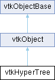

|
Etrek
|
|
Etrek
|
A data object structured as a tree. More...
#include <vtkHyperTree.h>

Public Member Functions | |
| vtkTypeMacro (vtkHyperTree, vtkObject) | |
| void | PrintSelf (ostream &os, vtkIndent indent) override |
| void | Initialize (unsigned char branchFactor, unsigned char dimension, unsigned char numberOfChildren) |
| virtual void | InitializeForReader (vtkIdType numberOfLevels, vtkIdType nbVertices, vtkIdType nbVerticesOfLastLevel, vtkBitArray *isParent, vtkBitArray *isMasked, vtkBitArray *outIsMasked)=0 |
| virtual void | BuildFromBreadthFirstOrderDescriptor (vtkBitArray *descriptor, vtkIdType numberOfBits, vtkIdType startIndex=0)=0 |
| virtual void | ComputeBreadthFirstOrderDescriptor (unsigned int depthLimiter, vtkBitArray *inputMask, vtkTypeInt64Array *numberOfVerticesPerDepth, vtkBitArray *descriptor, vtkIdList *breadthFirstIdMap)=0 |
| VTK_DEPRECATED_IN_9_4_0 ("You must use depthLimiter parameter for transmit the eponymous member of vtkHyperTreeGrid") void ComputeBreadthFirstOrderDescriptor(vtkBitArray *inputMask | |
| void | CopyStructure (vtkHyperTree *ht) |
| virtual vtkHyperTree * | Freeze (const char *mode)=0 |
| unsigned int | GetNumberOfLevels () const |
| vtkIdType | GetNumberOfVertices () const |
| vtkIdType | GetNumberOfNodes () const |
| vtkIdType | GetNumberOfLeaves () const |
| int | GetBranchFactor () const |
| int | GetDimension () const |
| vtkIdType | GetNumberOfChildren () const |
| std::shared_ptr< vtkHyperTreeGridScales > | InitializeScales (const double *scales, bool reinitialize=false) const |
| virtual unsigned long | GetActualMemorySizeBytes ()=0 |
| unsigned int | GetActualMemorySize () |
| virtual bool | IsGlobalIndexImplicit ()=0 |
| virtual void | SetGlobalIndexStart (vtkIdType start)=0 |
| vtkIdType | GetGlobalIndexStart () const |
| virtual void | SetGlobalIndexFromLocal (vtkIdType index, vtkIdType global)=0 |
| virtual vtkIdType | GetGlobalIndexFromLocal (vtkIdType index) const =0 |
| virtual vtkIdType | GetGlobalNodeIndexMax () const =0 |
| virtual bool | IsLeaf (vtkIdType index) const =0 |
| virtual void | SubdivideLeaf (vtkIdType index, unsigned int level)=0 |
| virtual bool | IsTerminalNode (vtkIdType index) const =0 |
| virtual vtkIdType | GetElderChildIndex (unsigned int index_parent) const =0 |
| virtual const unsigned int * | GetElderChildIndexArray (size_t &nbElements) const =0 |
| void | SetTreeIndex (vtkIdType treeIndex) |
| vtkIdType | GetTreeIndex () const |
| void | GetScale (double s[3]) const |
| double | GetScale (unsigned int d) const |
| void | SetScales (std::shared_ptr< vtkHyperTreeGridScales > scales) const |
| bool | HasScales () const |
| std::shared_ptr< vtkHyperTreeGridScales > | GetScales () const |
| Public Member Functions inherited from vtkObject | |
| vtkBaseTypeMacro (vtkObject, vtkObjectBase) | |
| virtual void | DebugOn () |
| virtual void | DebugOff () |
| bool | GetDebug () |
| void | SetDebug (bool debugFlag) |
| virtual void | Modified () |
| virtual vtkMTimeType | GetMTime () |
| void | PrintSelf (ostream &os, vtkIndent indent) override |
| void | RemoveObserver (unsigned long tag) |
| void | RemoveObservers (unsigned long event) |
| void | RemoveObservers (const char *event) |
| void | RemoveAllObservers () |
| vtkTypeBool | HasObserver (unsigned long event) |
| vtkTypeBool | HasObserver (const char *event) |
| vtkTypeBool | InvokeEvent (unsigned long event) |
| vtkTypeBool | InvokeEvent (const char *event) |
| std::string | GetObjectDescription () const override |
| unsigned long | AddObserver (unsigned long event, vtkCommand *, float priority=0.0f) |
| unsigned long | AddObserver (const char *event, vtkCommand *, float priority=0.0f) |
| vtkCommand * | GetCommand (unsigned long tag) |
| void | RemoveObserver (vtkCommand *) |
| void | RemoveObservers (unsigned long event, vtkCommand *) |
| void | RemoveObservers (const char *event, vtkCommand *) |
| vtkTypeBool | HasObserver (unsigned long event, vtkCommand *) |
| vtkTypeBool | HasObserver (const char *event, vtkCommand *) |
| template<class U, class T> | |
| unsigned long | AddObserver (unsigned long event, U observer, void(T::*callback)(), float priority=0.0f) |
| template<class U, class T> | |
| unsigned long | AddObserver (unsigned long event, U observer, void(T::*callback)(vtkObject *, unsigned long, void *), float priority=0.0f) |
| template<class U, class T> | |
| unsigned long | AddObserver (unsigned long event, U observer, bool(T::*callback)(vtkObject *, unsigned long, void *), float priority=0.0f) |
| vtkTypeBool | InvokeEvent (unsigned long event, void *callData) |
| vtkTypeBool | InvokeEvent (const char *event, void *callData) |
| virtual void | SetObjectName (const std::string &objectName) |
| virtual std::string | GetObjectName () const |
| Public Member Functions inherited from vtkObjectBase | |
| const char * | GetClassName () const |
| virtual vtkTypeBool | IsA (const char *name) |
| virtual vtkIdType | GetNumberOfGenerationsFromBase (const char *name) |
| virtual void | Delete () |
| virtual void | FastDelete () |
| void | InitializeObjectBase () |
| void | Print (ostream &os) |
| void | Register (vtkObjectBase *o) |
| virtual void | UnRegister (vtkObjectBase *o) |
| int | GetReferenceCount () |
| void | SetReferenceCount (int) |
| bool | GetIsInMemkind () const |
| virtual void | PrintHeader (ostream &os, vtkIndent indent) |
| virtual void | PrintTrailer (ostream &os, vtkIndent indent) |
| virtual bool | UsesGarbageCollector () const |
Static Public Member Functions | |
| static VTK_NEWINSTANCE vtkHyperTree * | CreateInstance (unsigned char branchFactor, unsigned char dimension) |
| Static Public Member Functions inherited from vtkObject | |
| static vtkObject * | New () |
| static void | BreakOnError () |
| static void | SetGlobalWarningDisplay (vtkTypeBool val) |
| static void | GlobalWarningDisplayOn () |
| static void | GlobalWarningDisplayOff () |
| static vtkTypeBool | GetGlobalWarningDisplay () |
| Static Public Member Functions inherited from vtkObjectBase | |
| static vtkTypeBool | IsTypeOf (const char *name) |
| static vtkIdType | GetNumberOfGenerationsFromBaseType (const char *name) |
| static vtkObjectBase * | New () |
| static void | SetMemkindDirectory (const char *directoryname) |
| static bool | GetUsingMemkind () |
Public Attributes | |
| vtkTypeInt64Array * | numberOfVerticesPerDepth |
| vtkTypeInt64Array vtkBitArray * | descriptor |
| vtkTypeInt64Array vtkBitArray vtkIdList * | breadthFirstIdMap |
Protected Member Functions | |
| virtual void | InitializePrivate ()=0 |
| virtual void | PrintSelfPrivate (ostream &os, vtkIndent indent)=0 |
| virtual void | CopyStructurePrivate (vtkHyperTree *ht)=0 |
| Protected Member Functions inherited from vtkObject | |
| void | RegisterInternal (vtkObjectBase *, vtkTypeBool check) override |
| void | UnRegisterInternal (vtkObjectBase *, vtkTypeBool check) override |
| void | InternalGrabFocus (vtkCommand *mouseEvents, vtkCommand *keypressEvents=nullptr) |
| void | InternalReleaseFocus () |
| Protected Member Functions inherited from vtkObjectBase | |
| virtual void | ReportReferences (vtkGarbageCollector *) |
| vtkObjectBase (const vtkObjectBase &) | |
| void | operator= (const vtkObjectBase &) |
Protected Attributes | |
| unsigned char | BranchFactor |
| unsigned char | Dimension |
| unsigned char | NumberOfChildren |
| std::shared_ptr< vtkHyperTreeData > | Datas |
| std::shared_ptr< vtkHyperTreeGridScales > | Scales |
| Protected Attributes inherited from vtkObject | |
| bool | Debug |
| vtkTimeStamp | MTime |
| vtkSubjectHelper * | SubjectHelper |
| std::string | ObjectName |
| Protected Attributes inherited from vtkObjectBase | |
| std::atomic< int32_t > | ReferenceCount |
| vtkWeakPointerBase ** | WeakPointers |
Additional Inherited Members | |
| Static Protected Member Functions inherited from vtkObjectBase | |
| static vtkMallocingFunction | GetCurrentMallocFunction () |
| static vtkReallocingFunction | GetCurrentReallocFunction () |
| static vtkFreeingFunction | GetCurrentFreeFunction () |
| static vtkFreeingFunction | GetAlternateFreeFunction () |
A data object structured as a tree.
An hypertree grid is a dataobject containing a rectilinear grid of elements that can be either null or a hypertree. An hypertree is a dataobject describing a decomposition tree. A VERTICE is an element of this tree. A NODE, also called COARSE cell, is a specific vertice which is refined and than has either exactly f^d children, where f in {2,3} is the branching factor, the same value for all trees in this hypertree grid, and d in {1,2,3} is the spatial dimension. It is called coarse because there are smaller child cells. A LEAF, also called FINE cell, is a vertice without children, not refined. It is called fine because in the same space there are no finer cells. In a tree, we can find coarse cells smaller than fine cell but not in the same space.
Such trees have particular names for f=2:
The original octree class name came from the following paper:
* @ARTICLE{yau-srihari-1983,
* author={Mann-May Yau and Sargur N. Srihari},
* title={A Hierarchical Data Structure for Multidimensional Digital Images},
* journal={Communications of the ACM},
* month={July},
* year={1983},
* volume={26},
* number={7},
* pages={504--515}
* }
* Attributes are associated with (all) cells, not with points. The attributes that are associated with coarses, it's used for LoD (Level-of-Detail). The attributes on coarse cells can be given by the code or/and computed by the use of a specific filter exploiting the values from its children (which can be leaves or not).
The geometry is implicitly given by the size of the root node on each axis and position of the origin. In fact, in 3D, the geometry is then not limited to a cube but can have a rectangular shape.
By construction, an hypertree is efficient in memory usage. The LoD feature allows for quick culling of part of the dataobject.
This is an abstract class used as a superclass by a custom templated compact class. Other versions of this code could be made available to meet other needs without questioning cursors and filters. All methods are pure virtual. This is done to hide templates.
* +y * +-+-+ ^ * |2|3| | * +-+-+ O +z +-> +x * |0|1| * +-+-+ * +y * +-+-+ ^ * |6|7| | * +-+-+ 1 +z +-> +x * |4|5| * +-+-+ *
* +y * +-+-+ ^ * |2|3| | * +-+-+ +-> +x * |0|1| * +-+-+ *
* O+-> +x *
It's more difficult with f=3.
|
pure virtual |
This method builds the indexing of this tree given a breadth first order descriptor. This descriptor is the same bit array that would be created by ComputeBreadthFirstOrderDescriptor. The current tree is ready to use after calling this method.
| descriptor | is a binary descriptor, in breadth first order, that describes the tree topology. If vertex of index id in breadth first order has children, then the corresponding value in descriptor is one. Otherwise, it is set to zero. Remember that arrays are appended, meaning that the index in descriptor corresponding to id in the current tree would be the size of descriptor before calling this method, plus id. |
| numberOfBits | Number of bits to be read in the descriptor to build the tree. Remember that the last depth of the tree is not encoded in the descriptor, as we know that they are full of zeros (because leaves have no children). |
| startIndex | Input descriptor is being read starting at this index. |
|
pure virtual |
This method computes the breadth first order descriptor of the current tree. It takes as input the input mask inputMask which should be provided by the vtkHyperTreeGrid in which this vtkHyperTree lies. In addition to computing the descriptor, it computes the mapping between the current memory layout of this tree with the breadth first order version of it.
Outputs are numberOfVerticesPerDepth, descriptor and breadthFirstIdMap. Each of those arrays are appended with new data, so one can create one unique big array for an entire vtkHyperTreeGrid concatenating breadth first order description and mapping of concatenated trees.
| depthLimiter | the depth limiter by vtkHyperTreeGrid. |
| inputMask | the mask provided by vtkHyperTreeGrid. |
| numberOfVerticesPerDepth | is self explanatory: from depth 0 to the maximum depth of the tree, it stores the number of vertices at each depth. If the input tree has masked subtrees such that getting rid of those subtrees reduces the depth, then numberOfVerticesPerDepth will take this smaller depth into account rather than adding zeros. In other words, numberOfVerticesPerDepth cannot have zero values. |
| descriptor | is a binary descriptor, in breadth first order, that describes the tree topology. If vertex of index id in breadth first order has children, then the corresponding value in descriptor is one. Otherwise, it is set to zero. Remember that arrays are appended, meaning that the index in descriptor corresponding to id in the current tree would be the size of descriptor before calling this method, plus id. |
| breadthFirstIdMap | maps breadth first ordering to current indexing of the current tree. In other word, the value at appended position id in this array gives the corresponding index in the current tree. |
| void vtkHyperTree::CopyStructure | ( | vtkHyperTree * | ht | ) |
Copy the structure by sharing the decomposition description of the tree.
|
static |
Return an instance of an implementation of a hypertree for given branch factor and dimension. Other versions of this code could be made available to meet other needs without questioning cursors and filters. Since an instance, an other instance can be creating by call the method Freeze (by default, nothing more, instance currently is returning).
|
pure virtual |
Return a freeze instance (a priori compact but potentially unmodifiable). This method is calling by the Squeeze method of hypertree grid. The mode parameter will allow to propose different instances. Today, there is none, the freeze call does not do anything.
|
inline |
Return memory used in kibibytes (1024 bytes). NB: Ignore the attribute array because its size is added by the data set.
|
pure virtual |
Return memory used in bytes. NB: Ignore the attribute array because its size is added by the data set.
|
inline |
Return the branch factor of the tree.
|
inline |
Return the spatial dimension of the tree.
|
pure virtual |
Return the elder child index, local index node of first child, of node, coarse cell, identified by index_parent.
|
pure virtual |
Return the elder child index array, internals of the tree structure Should be used with great care, for consulting and not modifying.
|
pure virtual |
Get the global id of a local node identified by index. Use the explicit mapping function if available or the implicit mapping build with start global index.
|
inline |
Get the start global index for the current tree for implicit global index mapping.
|
pure virtual |
Return the maximum value reached by global index mapping (implicit or explicit).
|
inline |
Return the number of children per node of the tree. This value is branchfactoring scale spatial dimension (f^d).
|
inline |
Return the number of leaf (fine) in the tree.
|
inline |
Return the number of levels.
|
inline |
Return the number of nodes (coarse) in the tree.
|
inline |
Return the number of all vertices (coarse and fine) in the tree.
| void vtkHyperTree::GetScale | ( | double | s[3] | ) | const |
Set/Get scale of the tree in each direction for the ground level (0).
|
inline |
Return all scales.
|
inline |
Return the existence scales.
| void vtkHyperTree::Initialize | ( | unsigned char | branchFactor, |
| unsigned char | dimension, | ||
| unsigned char | numberOfChildren ) |
Restore the initial state: only one vertice is then a leaf: the root cell for the hypertree.
| branchFactor | |
| dimension | |
| numberOfChildren |
|
pure virtual |
Restore a state from read data, without using a cursor Call after create hypertree with initialize.
| numberOfLevels | the maximum number of levels. |
| nbVertices | the number of vertices of the future tree (coarse and leaves), fixed either the information loading (for load reduction) or defined by the fixed level of reader. |
| nbVerticesOfLastLevel | the number of vertices of last valid level. |
| isParent | a binary decomposition tree by level with constraint all describe children. It is useless to declare all the latest values to False, especially the last level may not be defined. |
| isMasked | a binary mask corresponding. It is useless to declare all the latest values to False. |
| outIsMasked | the mask of hypertree grid including this hypertree which is a vtkBitArray. |
| std::shared_ptr< vtkHyperTreeGridScales > vtkHyperTree::InitializeScales | ( | const double * | scales, |
| bool | reinitialize = false ) const |
In an hypertree, all cells are the same size by level. This function initializes this cache system and is particularly used by the symmetric filter.
|
pure virtual |
Return if implicit global index mapping has been used. If true, the initialize has been done by SetGlobalIndexStart (one call by hypertree). If false, the initialize has been done by SetGlobalIndexFromLocal (one call by cell of hypertree). GetGlobalIndexFromLocal get the good value of global index mapping for one cell what ever the initialize metho used.
|
pure virtual |
Return if a vertice identified by index in tree as being leaf.
|
pure virtual |
Return if a vertice identified by index in tree as a terminal node. For this, all children must be all leaves.
|
overridevirtual |
Methods invoked by print to print information about the object including superclasses. Typically not called by the user (use Print() instead) but used in the hierarchical print process to combine the output of several classes.
Reimplemented from vtkObjectBase.
|
pure virtual |
Set the mapping between a node index in tree and a explicit global index mapping. This global index mapping permits to access a value of field for a cell, in explicit, the index depend of order values. For this tree, in debug, assert is calling if tried call SetGlobalIndexStart.
|
pure virtual |
Set the start implicit global index mapping for the first cell in the current tree. The implicit global index mapping of a node will be computed by this start index + the node index (local offset in tree). The node index begin by 0, the origin cell in tree. The follow values are organizing by fatrie as i to i+NumberOfChildren, for all children of one coarse cell, i is 1+8*s with s in integer. The order of fatrie depend of order to call SubdivideLeaf. This global index mapping permits to access a value of field for a cell, in implicit, the order values depends of implicit order linking with the order build of this tree. WARNING: See of hypertree grid, for to use a implicit global index mapping, you have to build hypertree by hypertree without to recome in hypertree also build. For this tree, in debug, assert is calling if tried call SetGlobalIndexFromLocal.
|
inline |
In an hypertree, all cells are the same size by level. This function initializes this cache system and is particularly used by the symmetric filter. Here, you set 'scales' since extern description (sharing).
|
inline |
Set/Get tree index in hypertree grid. Services for internal use between hypertree grid and hypertree.
|
pure virtual |
Subdivide a vertice, only if its a leaf.
| vtkTypeInt64Array vtkBitArray vtkIdList* vtkHyperTree::breadthFirstIdMap |